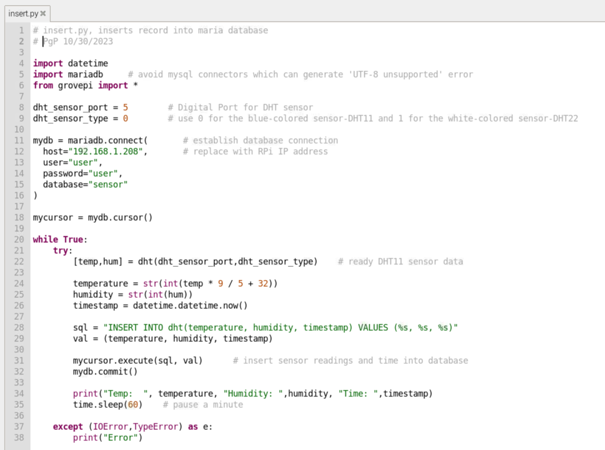
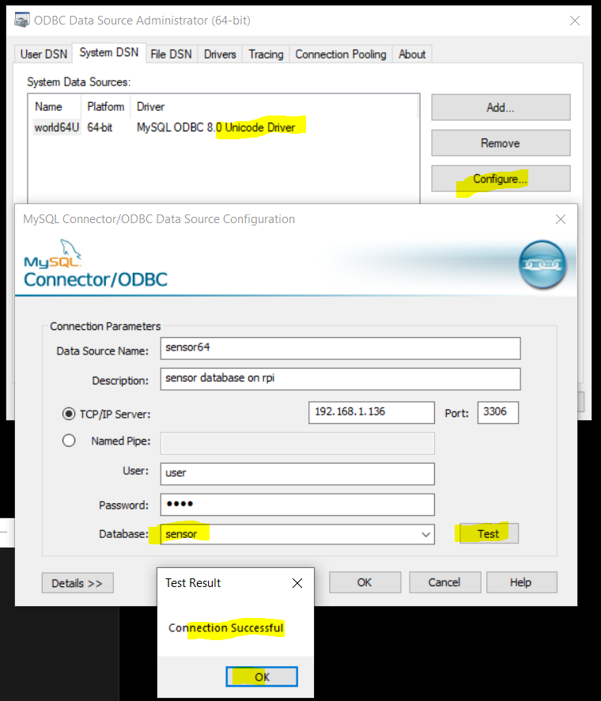
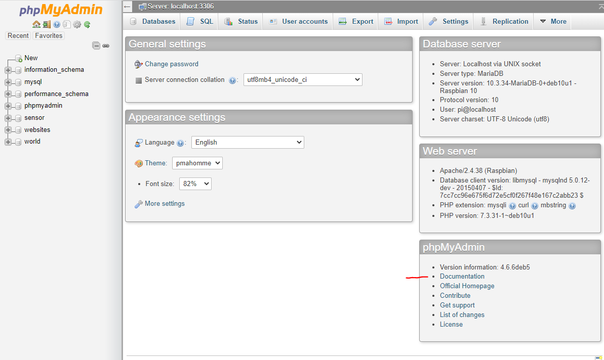

These exercises will guide you through the process of gathering Raspberry Pi sensor data in a MySQL/Maria database server on the Raspberry Pi. Then you will use Microsoft Access to link over a network connection to the MySQL/Maria database to view this data. More information on setting up MySQL is available online.
After completing this assignment you will be able to:
You are expected to have a working knowledge of SBC hardware and software. If you do not understand how to use an item, perform a Google Search, refer to the WSU Technology Knowledge Base, ask a teaching assistant, or ask the instructor.
9/10/22-rough outline
1. make sure you can collect DHT data from Raspberry Pi
2. make sure you can write data to MySQL database You may need to install the Python mysql library using the command: sudo pip3 install mariadb==1.0.11 You may need to install dependcies for mariadb using the command: sudo apt install libmariadb3 libmariadb-dev
sudo pip3 install mariadb==1.0.11
sudo apt install libmariadb3 libmariadb-dev
3. make sure you can read data from mariad database-both throught CLI on RPi/MySQL and Microsoft Access via ODBC to MySQL You may need to create the MySQL/mariadb database 'sensor' and create the 'dht' table using the 'dht.sql' file run the following command in MySQL, once you transfer 'dht.sql' to the 'IoT_Files' folder on the Raspberry Pi: source /home/pi/Desktop/IoT_Files/dht.sql
source /home/pi/Desktop/IoT_Files/dht.sql
Review the code that reads the sensor data and writes it to the MySQL/MariaDB database.
insert.py
Python Code to Insert Database Record
[temp,hum] = dht(dht_sensor_port,dht_sensor_type) # read DHT11 sensor data
[temp,hum] = dht(dht_sensor_port,dht_sensor_type) # ready DHT11 sensor data
mydb.commit()
print("Temp: ", temperature, "Humidity: ",humidity, "Time: ",timestamp)
time.sleep(60) # pause a minute
These steps are performed on the Raspberry Pi.
sudo mysql -u root -p -h localhost
use sensor;
SELECT * from dht;
SOURCE /home/pi/Desktop/IoT_Files/dht.sql
These steps are performed on your computer.
In IOT20 you installed and configured the 64-bit MySQL ODBC 8 ANSI driver. Now you will make use of ODBC to link your Windows computer to the MySQL database on the Raspberry Pi.
This exercise demonstrates how to share data from a Raspberry Pi with other computers over a network.
user
sensor
 ODBC Test
SELECT * FROM dht;
These steps are done on your laptop using Microsoft Access and VNC.
Submit to the appropriate D2L Assignment folder a screenshot that documents your work.
(50) 1. Upload your screenshot to the 'IOT21' D2L Assignment Folder.
Based on your experience in this exercise, consider the value of MySQL databases that can be accessed over the network, for organizations, especially those needing to collect and analyze information. Think about what type of problems a Raspberry Pi equipped with a relational database could solve, and whether it could be cost-effective. Businesses are deploying IoT 'solutions'-how can MySQL equipped Raspberry Pis support or automate these efforts? How does the use of ODBC which enables viewing this data by programs such as Microsoft Access benefit an organization? References: MySQL on Pi: Pi MyLifeUp website W3 Schools: MySQL Tutorial GUI for MySQL: Mastering phpMyAdmin 3.4
Learning phpMyAdmin: See Documentation on local install, home screen.  phpMyAdmin, Documentation
When all tasks are completed press the Submit button.
Congratulations! You have collected sensor data from a Raspberry Pi in a relational database application-MySQL/mariadB on the Raspberry Pi, and linked it to a Windows computer running Microsoft Access.